Waldkätzchen
Wenn es knirscht, schaue ich genau hin. Ich begleite Familien, Kinder, Jugendliche und Systeme bei herausfordernden Dynamiken – klar, zugewandt und alltagstauglich.
Nicht glätten. Nicht beschönigen.
Sondern verstehen, halten und verändern.
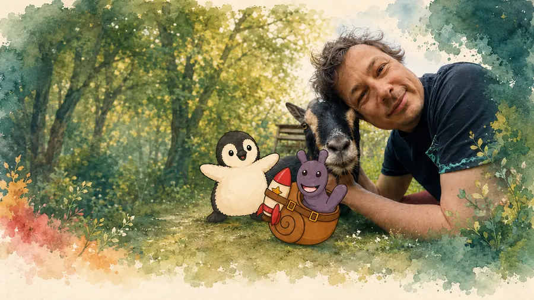
Waldkätzchen
Wenn es knirscht, schaue ich genau hin. Ich begleite Familien, Kinder, Jugendliche und Systeme bei herausfordernden Dynamiken – klar, zugewandt und alltagstauglich.
Nicht glätten. Nicht beschönigen.
Sondern verstehen, halten und verändern.
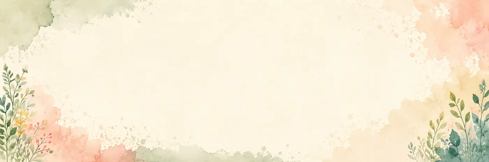
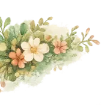

Wo ich diese Themen aufgreife
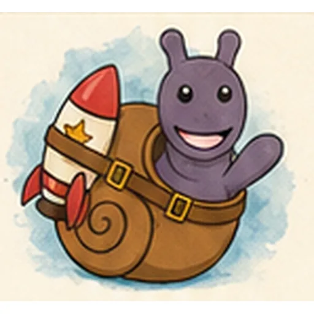
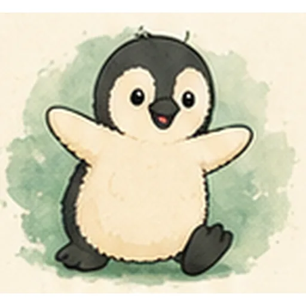
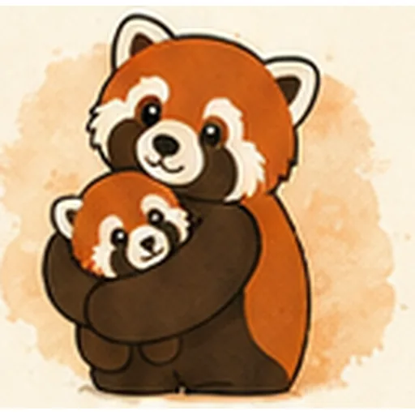
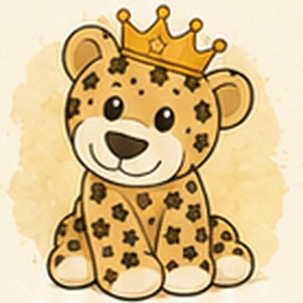
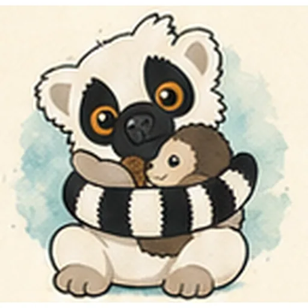
Herausfordernde Dynamiken verstehen
Ich begleite nicht nur bei großen Krisen. Auch das, was von außen banal wirkt, kann für Familien hochbelastend sein: Wutausbrüche, Rückzug, Eskalationen, Überforderung, Übergänge, Schule, Geschwisterdynamiken, Missverständnisse im Alltag. Genau dort setze ich an.
Es darf knirschen – es braucht nur einen anderen Blick. ♡
Mit wem ich arbeite
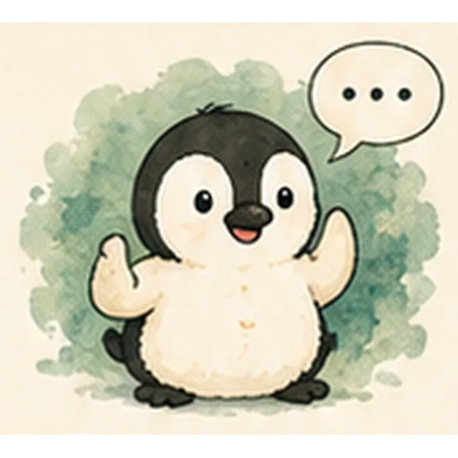
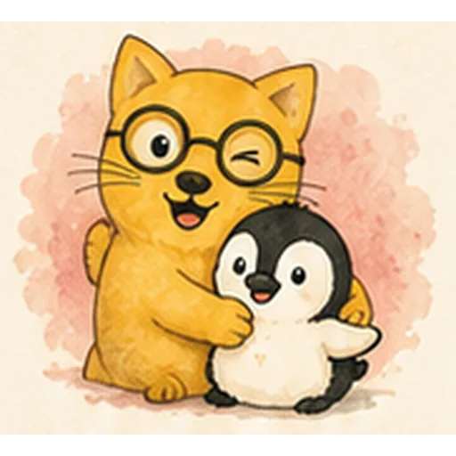
Ich arbeite mit allen Beteiligten, die notwendig sind – nicht nur mit der Person, die gerade am lautesten auffällt.
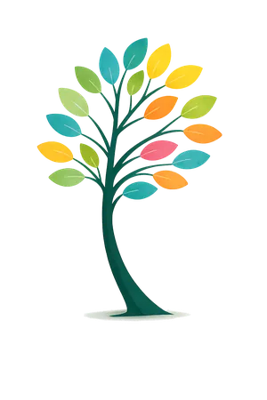
Wer ich bin
Ich komme aus zwei Welten: aus der Heilpädagogik und aus vielen Jahren in der IT. Dazu kommt meine persönliche Familienerfahrung. Diese Mischung macht meinen Blick besonders: analytisch, systemisch, menschlich und alltagsnah.
Ich denke in Beziehungen, Mustern und konkreten Handlungsschritten – nicht in schnellen Schuldzuweisungen.
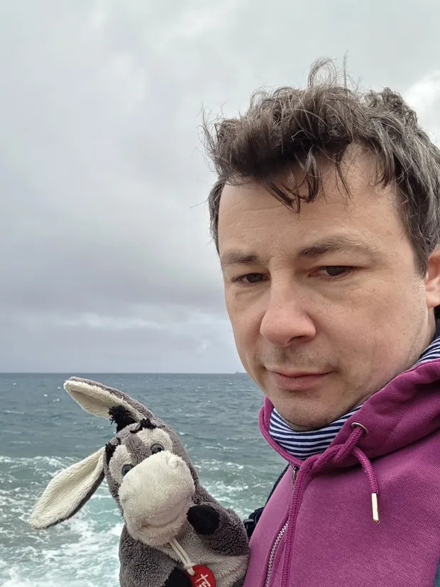
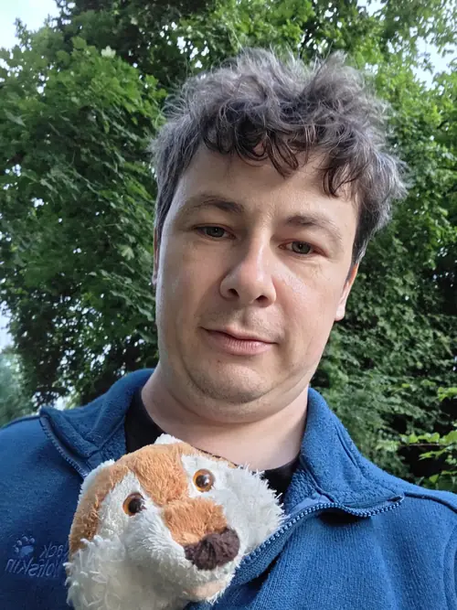
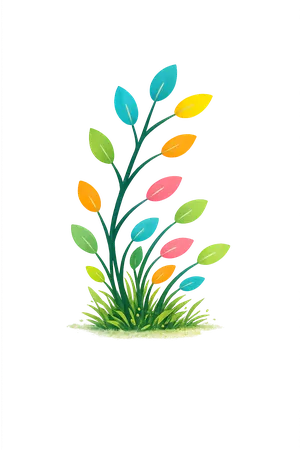
Warum das hier anders ist
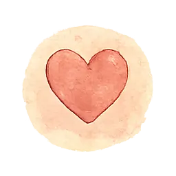
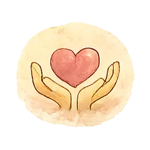
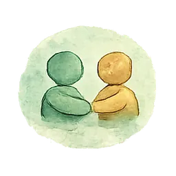
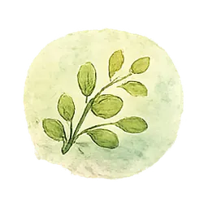
Mein USP liegt in der Verbindung aus professioneller Fachlichkeit, persönlicher Erfahrung, systemischem Denken, Naturverbundenheit und einer Sprache, die Familien wirklich erreicht. ♡
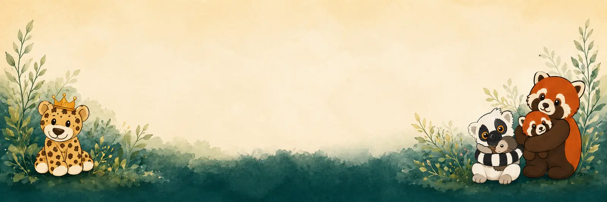
Kontakt aufnehmen
Schreiben Sie mir – ich melde mich zeitnah zurück.
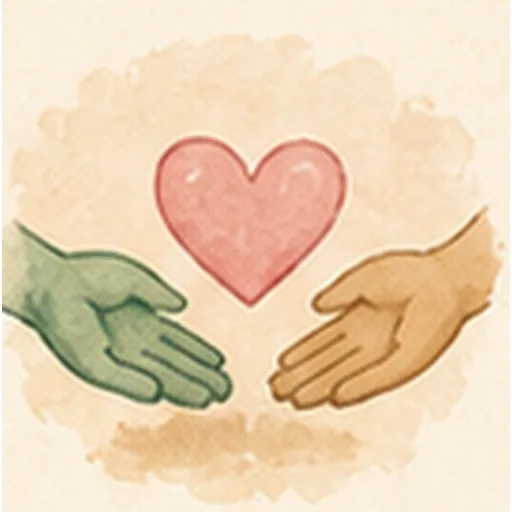
Danke für Ihre Nachricht!
Ich melde mich so bald wie möglich.
(Demo – es wurde noch nichts versendet.)